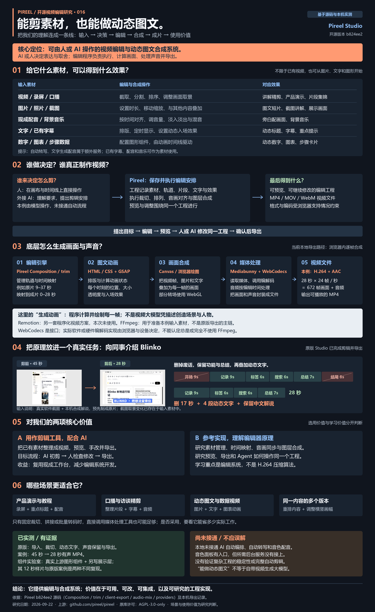
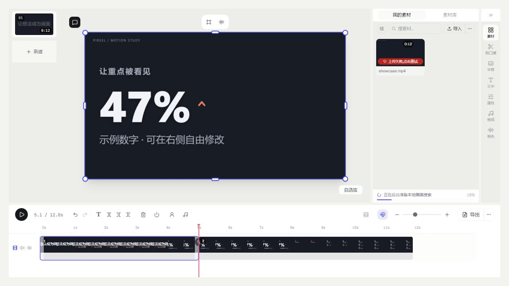

{kind=link}
视频或录屏
截取、拆分、重排片段，调整画幅与节奏；做产品介绍、操作教程或口播精剪。
Pireel 是一套开源视频编辑工作台及编辑引擎。你可以导入视频、图片和声音，在时间线上决定保留哪段、何时出现文字与动画，再预览、调整、导出视频。人可以操作界面；接入 Agent 后，模型也能通过工具修改同一份编辑工程。
本次原版实测由人确定取舍并操作，未接入自动剪辑模型。
这张全景图汇总了库的能力、底层技术、适用场景和我们的实测边界。点击图片可无损放大查看。

核心是把现有素材组织成视频，并把编辑决定保存为可继续修改的工程。
截取、拆分、重排片段，调整画幅与节奏；做产品介绍、操作教程或口播精剪。
把截图、照片和文字叠进画面；制作标题、重点数字、图表、步骤与转场动画。
把已有讲解或音乐放到时间线上，与画面同步，调节声音并合成到成片。
预览后继续修改片段和图层；导出 MP4 等格式，具体编码和格式受浏览器支持限制。
这些操作可以由人手动完成。自动判断“哪句话该删、怎样安排镜头”需要另接模型或 Agent；AI 生成全新画面、自动转写与配音也依赖相应服务。
把“剪已有素材”与“让 AI 参与决策或生成素材”分开看，接入成本就清楚了。
准备视频、录屏、图片或音频，在可用的现代浏览器中使用工作台。导出依赖浏览器提供相应的视频编解码能力；不同设备支持的格式可能不同。
使用 Pireel 的时间线、图层和图形组件，开发自己的编辑界面或接入流程。自建时还需要按项目说明安装前端依赖；分发与改造需遵守上游 AGPL-3.0-only 许可。
自然语言剪辑需要接入 Agent/模型及编辑工具；自动转写需要 ASR，配音需要 TTS。云项目和在线素材服务也需相应后端与账号。本地 OSS 版本未默认配置这些服务。
模型可以提出编辑计划，Pireel 的编辑工程和浏览器媒体能力负责真正的画面处理与导出。
本次 28 秒案例没有使用 Remotion，也没有由大模型逐帧生成画面。FFmpeg 只用于预先准备输入素材；WebCodecs 背后的具体编解码器由浏览器和设备决定。
它的价值在于形成可编辑的视频工程，让人工操作和自动化流程有共同的落点。
把录屏、截图、讲解和重点文字组合为短视频；修改时长和文案后可重新导出。
根据转写时间戳删除停顿或重复表达；同一批素材可重新组织为横屏、竖屏等版本。自动取舍需接入模型。
参考它的工程模型、时间映射、图层和浏览器导出链路，做自己的剪辑产品；接入 Agent 后可把模型的判断变成真实编辑动作。
试着改一个数字、剪掉一个片段，再把它导出成视频。
这套库的价值，在于让剪辑结果能被人和 Agent 持续修改。
将语句映射到素材时间，删除重复表达或停顿后，后面的片段接续前移。
12.0 秒 → 等待剪辑
调用上游 removeSrcRanges；识别结果为预设，无自动转写或 AI 调用。
整理语句、调整节奏、突出结论。
组合录屏、图片、步骤和重点提示。
为横屏讲解、竖屏短片重新组织内容。
这里演示图形短片。完整视频、音频、多轨剪辑请进入原版 Studio。
架构说明。本页没有连接 MCP，不会发送素材或指令给模型。
已在本机启动 Pireel Studio，将上面的 12 秒样片导入、播放，在 5.1 秒处分割，再导出成片。
右侧为真实运行截图。素材栏的云上传未配置，本地编辑与导出已验证。

将实际复现与需要外部服务的能力分开，方便判断你的接入成本。
| 能力 | 本页状态 | 实现与边界 |
|---|---|---|
| 图文与动画 | 真实运行 | 上游 Studio Kit 渲染，6 类组件开放交互。 |
| 拆分、删除、转写区间剪辑 | 真实运行 | 上游 trim.ts；演示单轨时间映射，不是完整 V2 多轨编辑器。 |
| 视频文件导出 | 展示层实现 | 本页将上游动态图形逐帧合成，用 MediaBunny 编码静音短片；非原版导出模块。 |
| 原版素材编辑与导出 | 另行实测 | 本机运行完整 OSS shell，已导入、播放、分割并导出 12 秒样片。 |
| 自然语言剪辑 / 自动转写 | 需要接入 | 本地版默认无 AI 后端；官方 Agent 插件连接在线服务。 |
| 生成视频、配音、云项目 | 需要服务 | 由宿主提供能力与账户，部分服务可能消耗积分。 |